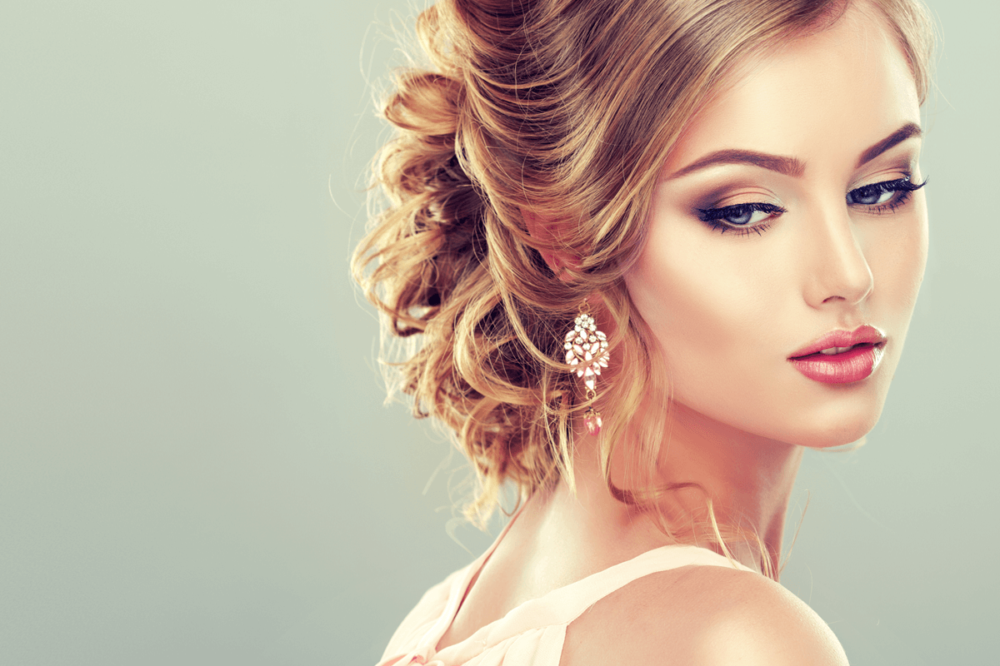

BODY CARE:

MANICURE
Your hands help you hold your baby’s head, your partner’s hands, and help you feel the world around you.
So why not take good care of them? A manicure at Naturals ensures you have the softest, most beautiful hands ever!
lavish locks salon offers 3 special manicures –
Spa Manicure, Radiant Manicure and Intense Moisturising Manicure.
The Spa Manicure is a herbal manicure that uses only organic products.
This manicure helps you de-stress by releasing the tension from your nerves.
PEDICURE
A pedicure is so much more than a cut and file for your nails. It releases the tension
from your feet, relieving stress from your entire body.
At Lavish locks salon, we specialise in 3 types of pedicure – Radiant Pedicure
, Intense Moisturising Pedicure and Spa Pedicure.
The Radiant Pedicure is best suited for tanned feet. It lighten tans and blemishes, making your feet beautiful.
THREADING AND WAXING
Our Lavish locks beauty experts provide basic grooming sessions like threading and waxing unlike any other
Our professionals take utmost care to ensure our customers have a comfortable and relatively less painful experience.
We use only good quality products with a gentle hand.
Eyebrow threading is done keeping in mind your facial features,
while a full body waxing ensures a silky smooth result.
At Lavish locks, we use a special liposoluble waxmade from resin extracts and
refined oils that nourishes your skin and removes tans.
SKIN CARE TREATMENT
FACIAL:
A facial is not just about pampering yourself, it also does wonders for your skin!
A facial done by a professional, deep cleans and hydrates your skin as well as relieves acne.
A good facial also improves blood circulation, giving your skin a healthy glow.
At lavish locks salon, we use products containing vital minerals and nutrients that reduce wrinkles and remove dead skin,
giving you a youthful appearance.
Black mud, fruit acids, vitamins, enzymes, gold and anti-oxidants are just a few of the special ingredients
found in our facials.
Nourish your skin and calm your mind with a soothing facial at lavish locks salon.
FACIAL CLEANUP:
A face cleanup is important to keep your skin healthy, hydrated and glowing!
lavish locks salon offers a face cleanup for every skin type – be it oily, normal, dry, combination or acne prone.
The relaxing massage strokes during a face cleanup nourish your skin from deep within, relieving stress.
A face cleanup at lavish locks salon will leave your skin with a natural glow!
FACE BLEACHING:
Face bleaching at lavisk locks salon beauty parlour is effective yet gentle on your skin.
Face bleaching is the best way to de-tan quickly, while adding brightness to your skin.
lavish locks salon’s skincare professionals bleach your face using techniques
that do not damage, harm or change the texture of your skin.
A face bleaching done at lavish locks salon leaves you with skin that’s fairer, fresher and flawless!
HAIR CARE
HAIR COLOURING:
At lavish locks salon, we only use high-end,
ammonia free hair color for all our hair coloring services,
which include root touch up, global colouring, streaking, block colouring and creative colouring.
Our hair experts can transform you from Plain Jane to Sexy Suzy
with just a few streaks of our ammonia free hair color.

HAIR STYLES:
At lavish locks salon, you can trust our hairstylists to give you the latest hairstyle,
while keeping in mind your preferences.
New hair styles also come with a relaxing hair wash
and conditioning, giving your hair a natural shine.
HAIR SPA:
There is nothing more relaxing than a good hair spa treatment.
At lavish locks salon, we pamper every strand of your hair thanks to the gifted,
gentle hands of our hair care professionals.
Hair spa is a healthy indulgence that exfoliates your hair,
stimulates your scalp and promotes hair growth.
A hair spa treatment is the best solution for dry, frizzy hair. It also relaxes your body and relieves stress.
That’s the best part about hair spa!